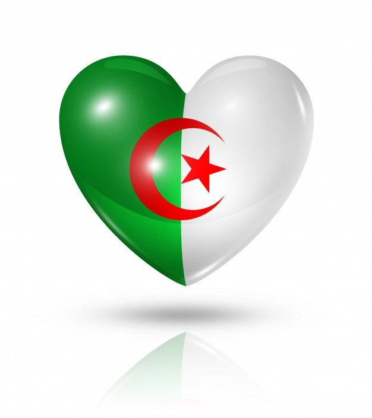
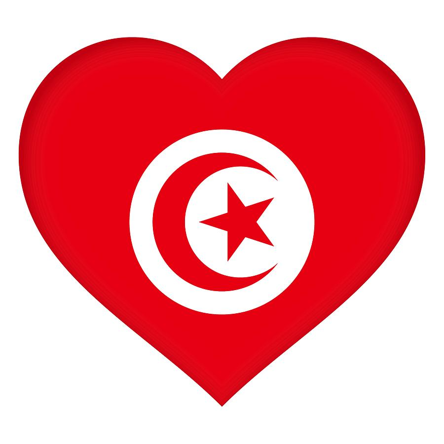
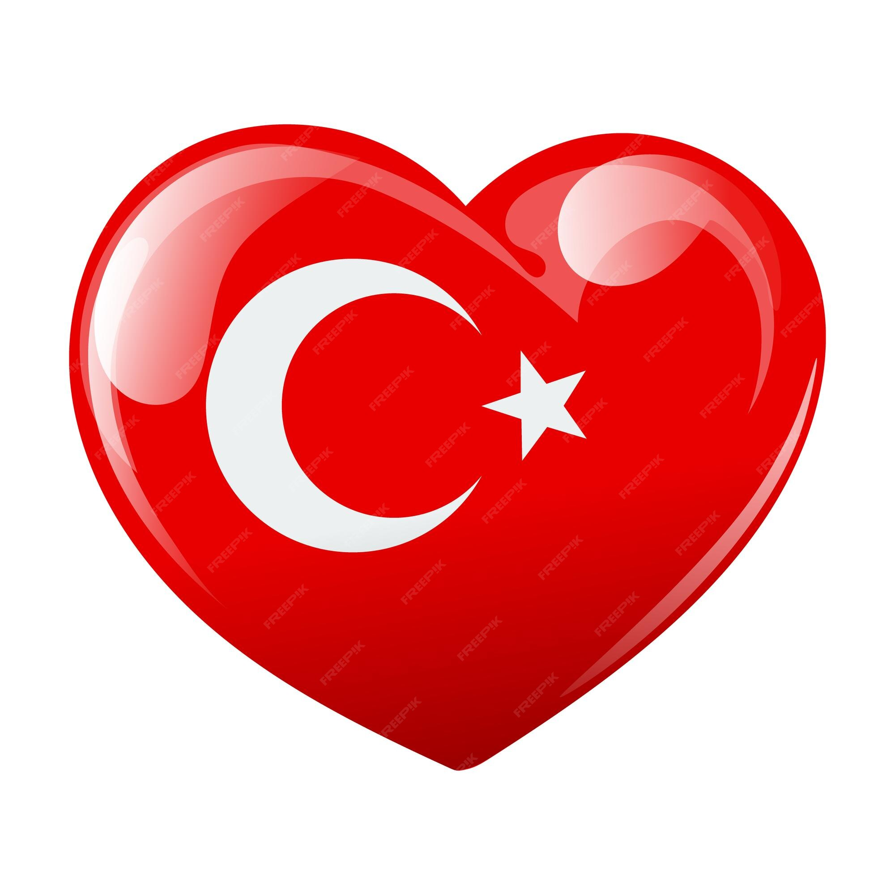
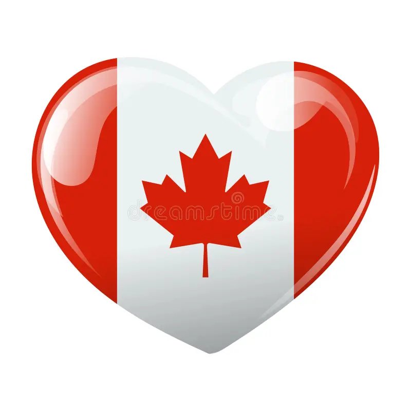

ALGÉRIE
ALGERIE : Pour commencer mes voyages, je souhaiterais de tout coeur allé en algérie car c’est le pays d’origine de ma maman, de mes oncles,tantes et grands parents. Je souhaiterais faire un voyage allant de Tlemcem a Annaba en passant par alger, oran, constantine (wilaya d’origine) et la Kabylie.

TUNISIE
TUNISIE : La Tunisie car c’est un pays proche de l’est de l’algérie et du quel je me sens très proche de part certains de mes amis d’enfances mais aussi de la cuisine que affectionne. Pour ce voyage, je souhaiterais visiter les villes de Tunis, Djerba, Hammamet, Carthage et Sidi Bou Said.

TURQUIE
TURQUIE : La Turquie car c’est un pays se situant entre deux continents (ASIE + EUROPE) ayant une très grosse histoire culutrel et historique. C’est un pays ayant une langue, des paysages et une cuisine que j’apprécie. Je souhaiterais visiter les villes d’Istanbul, de Bodrum et Ankara la capitale.

ÉGYPTE
EGYPTE : L’Egypte car c’est un pays avec une architecture et une grande hsitoires du au pharaon et au pyramide. C’est pays se situant à la fois dans continent et ayant une population dans le désert. Les villes qui m’attire le plus sont le Caire (la capitale) et Alexandrie.

CANADA
CANADA : Le Canada car c’est un pays mélengeant les langues anglaises et françaises, pour le comportement que j’ai d’extérieur et pour le côté profesionnelle car d’un point de vue personnelle c’est l’un de seuls pays anglophone dans lequel je me verrai construire quelque chose. A travers ce pays je pourrai améliorer mon anglais en étant dans des villes comme Ottawa mais aussi mon français en étant au Québec.

.jpg)